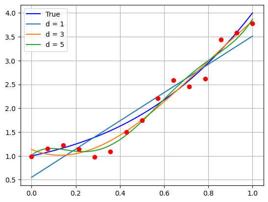
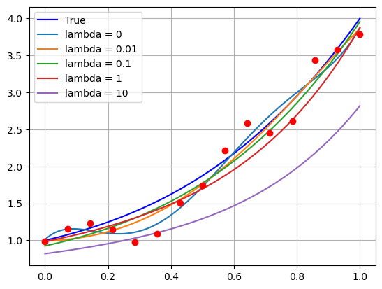
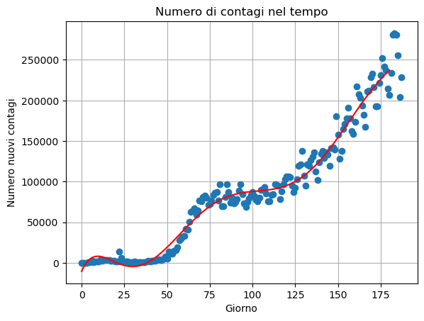

### Ri-definiamo i dati come fatto precedentemente
# (imposto sigma = 0.2 invece che 0.1 per far risaltare meglio)
import numpy as np
import matplotlib.pyplot as plt
# Definiamo la funzione f(x, alpha) che prende in input il vettore alpha dei coefficienti e un valore x, e ritorna il valore del rispettivo polinomio
def f(x, alpha):
d = alpha.shape[0] - 1 # abbiamo detto che la shape di alpha è (d+1, )
y = np.zeros_like(x) # Questa è l'unica riga che dobbiamo cambiare rispetto a prima!
for i in range(d+1):
y = y + alpha[i] * x ** i
return y
d_true = 3 # grado vero del polinomio
alpha_true = np.ones((d_true+1,))
# Numero di dati
n = 15
# Definiamo la deviazione standard del rumore
sigma = 0.2
# Generiamo il rumore
e = np.random.normal(loc=0, scale=sigma, size=(n, ))
# Definiamo gli x_i
x = np.linspace(0, 1, n)
y = f(x, alpha_true) + e
# Definiamo la matrice di Vandermonde
def vandermonde(x, d):
r"""
Preso in input un numpy array "x" di lunghezza (n, ) contentente i dati, e un valore intero "d" rappresentante il grado del polinomio,
costruisce e ritorna la matrice di vandermonde X di grado d, associata a x.
Parameters:
x (ndarray): Il vettore dei dati di input.
d (int): Il grado massimo del polinomio.
Returns:
X (ndarray): La matrice di Vandermonde di grado "d", associata ad x.
"""
n = x.shape[0]
# Inizializzo la matrice di Vandermonde con shape (n, d+1)
X = np.zeros((n, d+1))
# Costruisco la matrice di Vandermonde
for i in range(d+1):
X[:, i] = x ** i
return X
## Calcoliamo la soluzione con d variabile tra 0 e 4 e salviamole in una lista
alpha_chol = []
for d in range(6):
# Matrice di Vandermonde di grado d
X = vandermonde(x, d)
# Troviamo la matrice L tale che X^T X = L L^T
L = np.linalg.cholesky(X.T @ X)
###### Risolviamo il primo sistema:
# Calcoliamo il termine noto X^T y
Xty = X.T @ y
# Troviamo z
z = np.linalg.solve(L, Xty)
###### Risolviamo il secondo sistema:
# Troviamo alpha
alpha_temp = np.linalg.solve(L.T, z)
alpha_chol.append(alpha_temp)
# Visualizziamo il plot
xx = np.linspace(0, 1, 100)
yy_true = f(xx, alpha_true)
legend = ["True"]
plt.plot(xx, yy_true, 'b')
for d in range(1, 6, 2):
yy_chol = f(xx, alpha_chol[d])
plt.plot(xx, yy_chol)
legend.append(f"d = {d}")
plt.plot(x, y, 'ro')
plt.legend(legend)
plt.grid()
plt.show()

def residuo(X, y, alpha):
r = np.linalg.norm(X @ alpha - y) ** 2
return r
for d in range(6):
# Matrice di Vandermonde di grado d
X = vandermonde(x, d)
print(f"Residuo per d = {d}: {residuo(X, y, alpha_chol[d])}.")
Residuo per d = 0: 13.987117183889055.
Residuo per d = 1: 1.449588236344063.
Residuo per d = 2: 0.54792373645464.
Residuo per d = 3: 0.45916183121439985.
Residuo per d = 4: 0.44853276437057976.
Residuo per d = 5: 0.373358633773025.
# Definiamo il valore per il parametro "lambda"
lmbda = 1 # NOTA: il nome "lambda" è riservato nel linguaggio di Python.
# usare una storpiatura del nome come "lmbda"
# Definiamo la matrice A := (X^T X + lambda * I)
A = X.T @ X + lmbda * np.eye(d+1)
# Calcoliamo la sua decomposizione di Cholesky
L = np.linalg.cholesky(A)
# Risolviamo i due sistemi triangolari
z = np.linalg.solve(L, X.T @ y)
alpha_chol = np.linalg.solve(L.T, z)
## Calcoliamo le soluzioni con lambda variabile e salviamole in una lista
lmbda_list = [0, 1e-2, 1e-1, 1, 10]
# Matrice di Vandermonde di grado d
d = 5
X = vandermonde(x, d)
alpha_chol = []
for lmbda in lmbda_list:
# Troviamo la matrice L tale che X^T X = L L^T
L = np.linalg.cholesky(X.T @ X + lmbda * np.eye(d+1))
###### Risolviamo il primo sistema:
# Calcoliamo il termine noto X^T y
Xty = X.T @ y
# Troviamo z
z = np.linalg.solve(L, Xty)
###### Risolviamo il secondo sistema:
# Troviamo alpha
alpha_chol.append(np.linalg.solve(L.T, z))
# Visualizziamo il plot
xx = np.linspace(0, 1, 100)
yy_true = f(xx, alpha_true)
legend = ["True"]
plt.plot(xx, yy_true, 'b')
for i, lmbda in enumerate(lmbda_list):
yy_chol = f(xx, alpha_chol[i])
plt.plot(xx, yy_chol)
legend.append(f"lambda = {lmbda}")
plt.plot(x, y, 'ro')
plt.legend(legend)
plt.grid()
plt.show()
for alpha in alpha_chol:
print(alpha)

[ 1.01092069 3.9758764 -35.13588316 109.95934467 -123.53817674
47.59819423]
[ 0.99222319 0.13495817 2.15744449 1.46772564 0.13699509 -1.02666257]
[ 0.9247625 0.94995297 1.06313769 0.72260506 0.31979125 -0.02422216]
[0.98355801 0.86089313 0.70618524 0.55541496 0.43288888 0.33877013]
[0.82035896 0.56865816 0.45029324 0.37451873 0.32175477 0.28326106]
import pandas as pd
# Set data path
data_path = "./data/day_wise.csv"
# Load data
data = pd.read_csv(data_path)
print(data.info())
# Estriamo data (x) e nuovi casi (y)
x = pd.to_datetime(data['Date'])
y = data["New cases"]
# Convertiamo la data (x) in un intero incrementale
x = (x - x.min()).dt.days
import numpy as np
# Convertiamo x e y in numpy array
x = np.array(x)
y = np.array(y)
print(f"Shape of x: {x.shape}, Shape of y: {y.shape}.")
import matplotlib.pyplot as plt
# Visualizzazione
plt.plot(x, y, 'o')
plt.grid()
plt.xlabel("Giorno")
plt.ylabel("Numero nuovi contagi")
plt.title("Numero di contagi nel tempo")
plt.show()
<class 'pandas.core.frame.DataFrame'>
RangeIndex: 188 entries, 0 to 187
Data columns (total 12 columns):
# Column Non-Null Count Dtype
--- ------ -------------- -----
0 Date 188 non-null object
1 Confirmed 188 non-null int64
2 Deaths 188 non-null int64
3 Recovered 188 non-null int64
4 Active 188 non-null int64
5 New cases 188 non-null int64
6 New deaths 188 non-null int64
7 New recovered 188 non-null int64
8 Deaths / 100 Cases 188 non-null float64
9 Recovered / 100 Cases 188 non-null float64
10 Deaths / 100 Recovered 188 non-null float64
11 No. of countries 188 non-null int64
dtypes: float64(3), int64(8), object(1)
memory usage: 17.8+ KB
None
Shape of x: (188,), Shape of y: (188,).

# Abbiamo due vettori: x e y che rappresentano i dati.
# Definiamo la matrice di Vandermonde
def vandermonde(x, d):
r"""
Preso in input un numpy array "x" di lunghezza (n, ) contentente i dati, e un valore intero "d" rappresentante il grado del polinomio,
costruisce e ritorna la matrice di vandermonde X di grado d, associata a x.
Parameters:
x (ndarray): Il vettore dei dati di input.
d (int): Il grado massimo del polinomio.
Returns:
X (ndarray): La matrice di Vandermonde di grado "d", associata ad x.
"""
n = x.shape[0]
# Inizializzo la matrice di Vandermonde con shape (n, d+1)
X = np.zeros((n, d+1))
# Costruisco la matrice di Vandermonde
for i in range(d+1):
X[:, i] = x ** i
return X
# Scelto un grado d del polinomio, calcolare con
# il metodo di Cholesky la soluzione alpha_chol
# dei parametri che interpolano i dati.
# Poi rappresentare su grafico e determinare eventuale
# overfit/underfit (a occhio)
d = 7
X = vandermonde(x, d)
# Cholesky
L = np.linalg.cholesky(X.T @ X)
# Primo sistema
z = np.linalg.solve(L, X.T@y)
# Secondo sistema
alpha_chol = np.linalg.solve(L.T, z)
# Plottiamo
xx = np.linspace(0, 180, 200)
yy_chol = f(xx, alpha_chol)
# Visualizzazione
plt.plot(x, y, 'o')
plt.plot(xx, yy_chol, 'r-')
plt.grid()
plt.xlabel("Giorno")
plt.ylabel("Numero nuovi contagi")
plt.title("Numero di contagi nel tempo")
plt.show()

# Importiamo le librerie utili
import numpy as np
import matplotlib.pyplot as plt
# Definiamo la funzione f(x) = (x-1)^2 + e^x
def f(x):
y = (x-1)**2 + np.exp(x)
return y
# Definiamo un'intervallo di riferimento
a, b = -5, 5
N = 100 # Numero di punti
# Definiamo una discretizzazione dell'asse x
xx = np.linspace(a, b, N)
# Calcoliamo il rispettivo valore di y
yy = f(xx)
# Plot
plt.plot(xx, yy, '-')
plt.grid()
plt.xlabel(r'$x$')
plt.ylabel(r'$y$')
plt.title(r'Plot della funzione $f(x) = (x-1)^2 + e^x$')
plt.show()